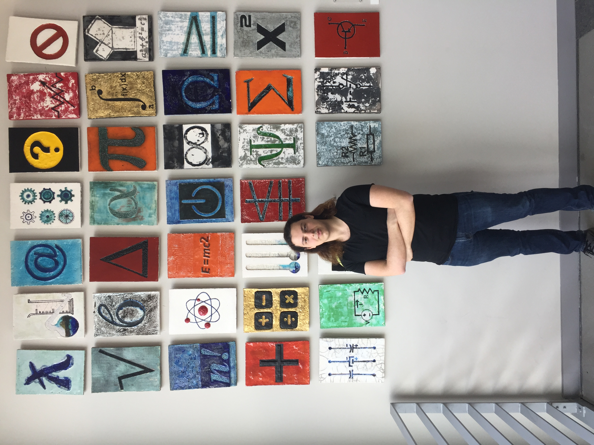

erinc.io
Hello, my name is Yigit Erinc. I live in Istanbul and I am a Senior year
Computer Science student at Ozyegin University. I conducted my internship at OBSS in Summer 2019.
My current interests are Web Development, Computer Networks and
Security.
I have experience in both Frontend (Vue, React) and Backend development (Spring, Hibernate).
I have also taken elective courses about Network Security, Communication Security and Multimedia (Video Streaming).
